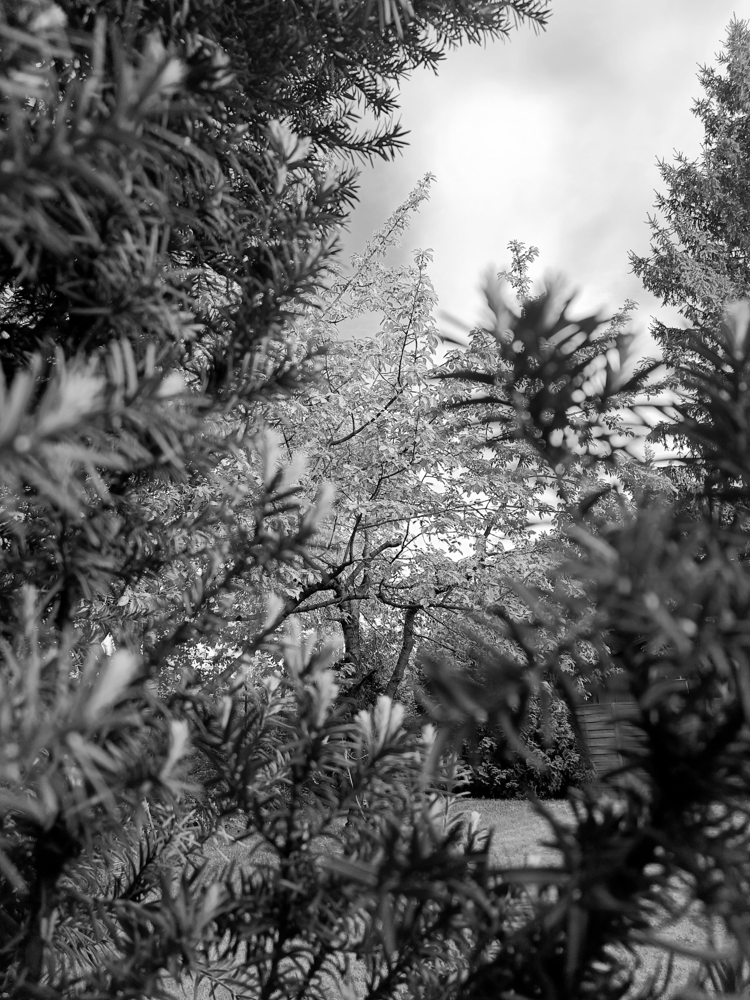
Czas spędzony pośród natury nigdy nie jest czasem zmarnowanym.
~Fotograf
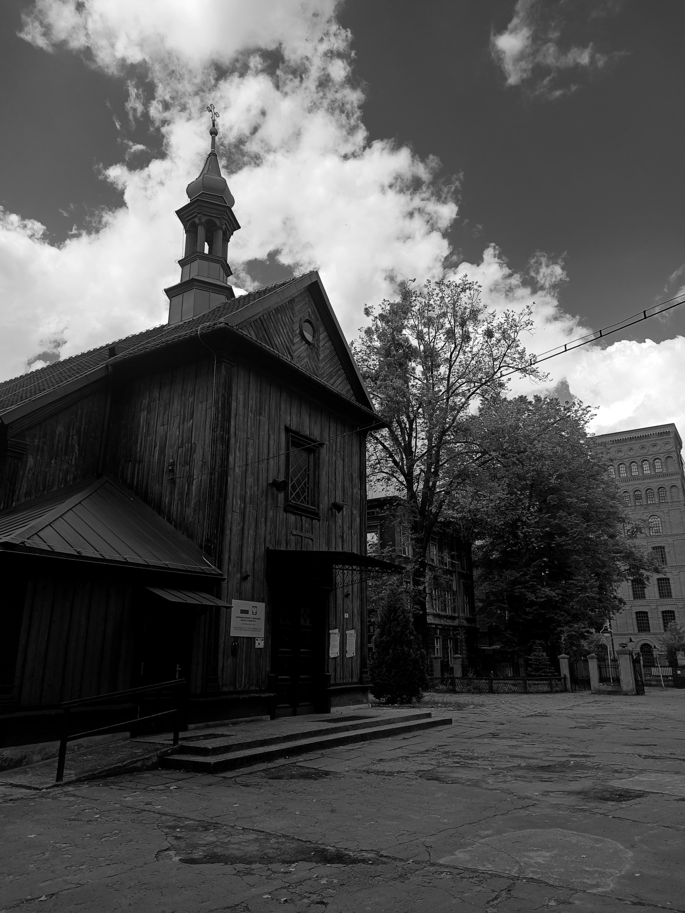
Zabytek w środku miasta? Jak najbardziej możliwe. Warto zwolnić żeby docenić coś co na codzień jest
niezuważalne.
~Fotograf
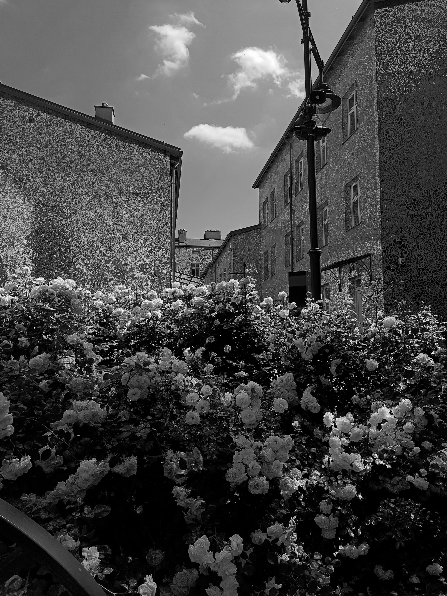
Pasaż róży, piękny dowód na to że sztuka potrafi być wszędzie nie tylko w muzeum.
~Fotograf
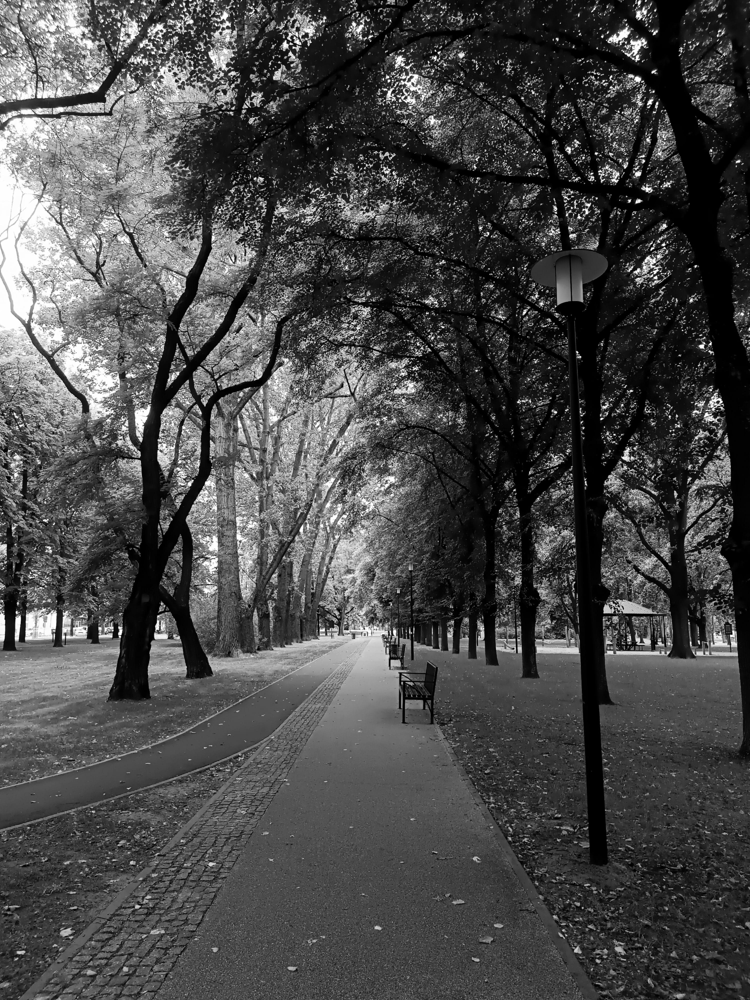
Czasami ścieżka jednak potrafi być prosta i krótka. To od nas zależy jak ją ukształtujemy.
~Fotograf
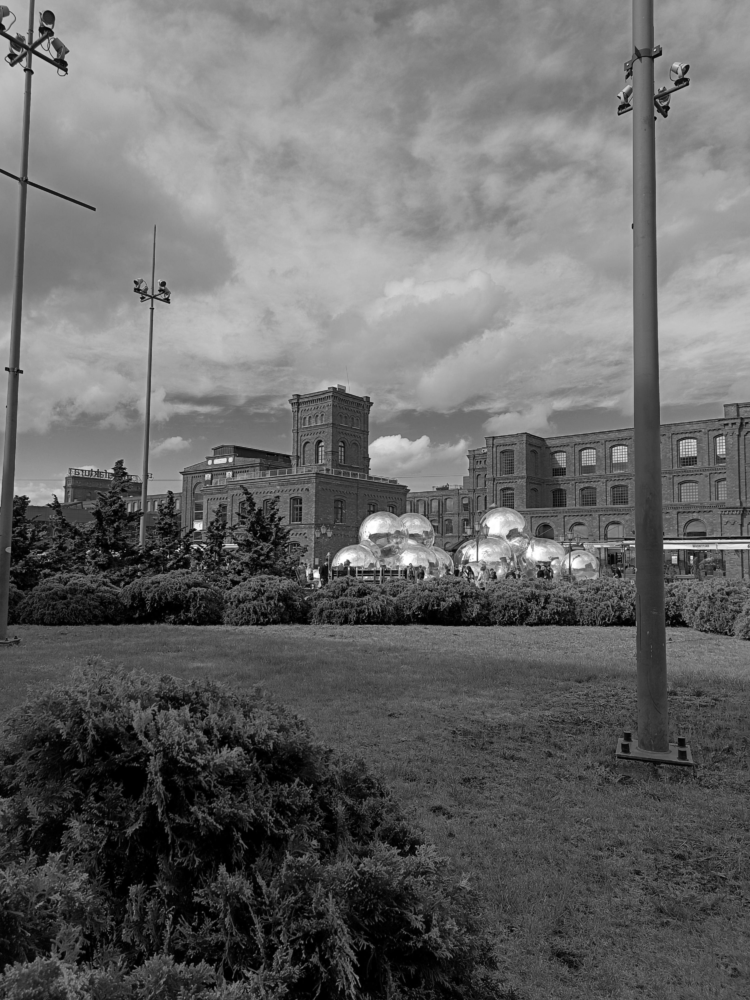
Nowoczesna instalacja na tle zabytkowej Manufaktury? Jeden z ładniejszych akcentów festiwalu światła w Łodzi.
~Fotograf
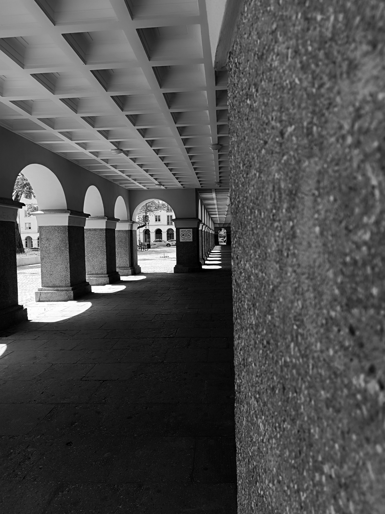
Stary rynek niepozorny ale urokliwy, nazwet on potrafi zachwycić wyjątkowymi przejściami.
~Fotograf
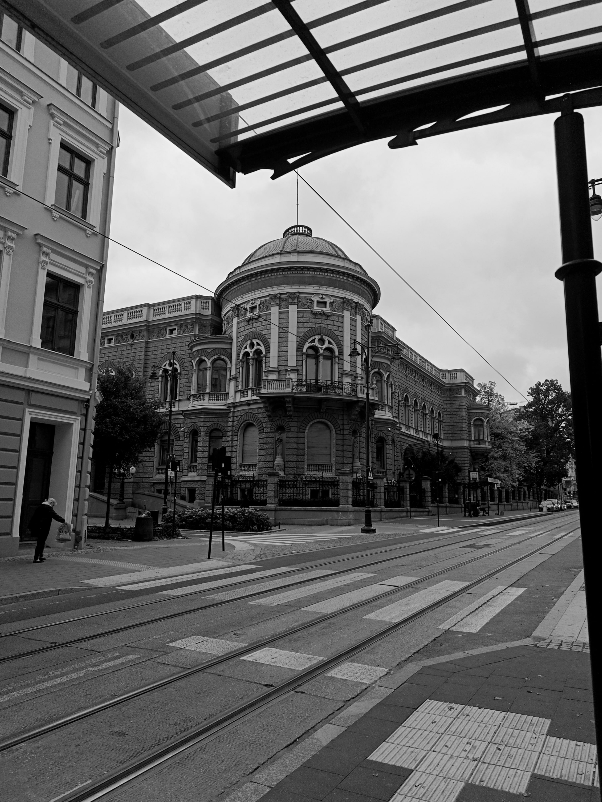
Akademia muzyczna, zdecydowanie piękny akcent, który się nie nudzi.
~Fotograf
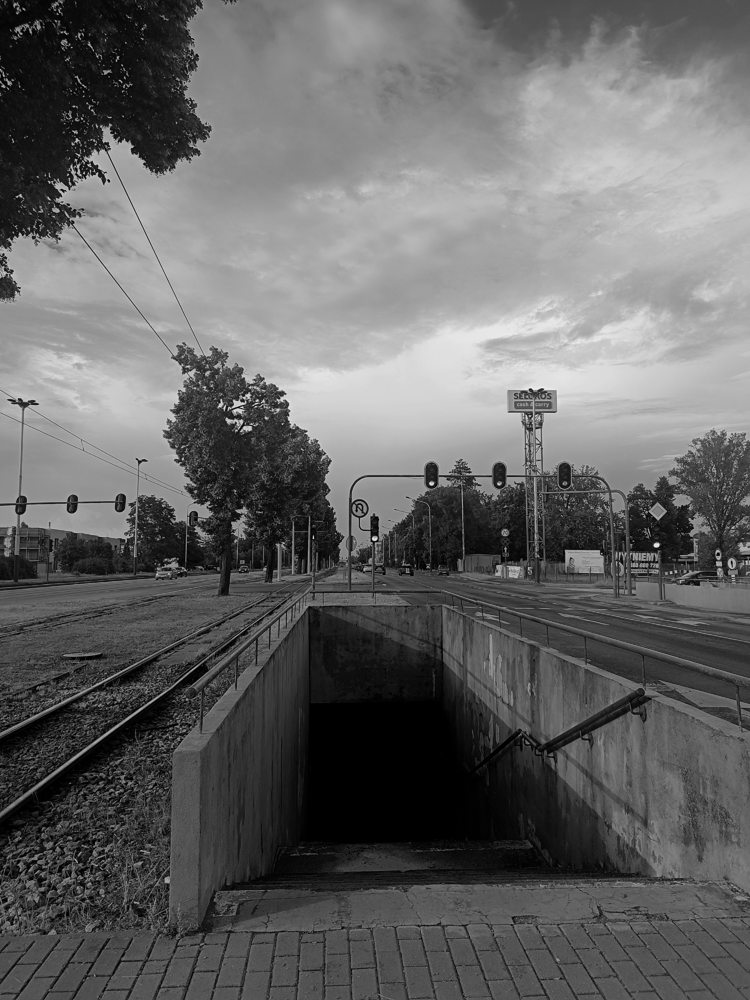
Przejścia podziemne to dowód na to że zawsze istnieje inne wyjście.
~Fotograf
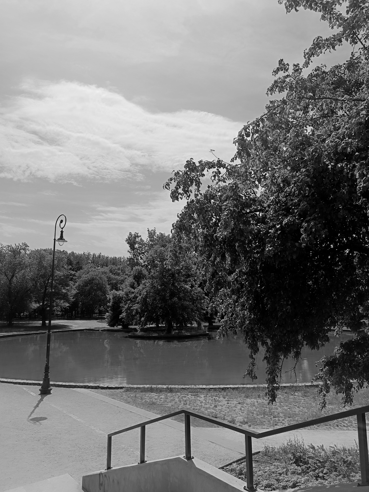
Park śledzia, jeden z ładniejszych parków i to w samym sercu Łodzi przy słynnej Manufakturze.
Nie można narzekać.
~Fotograf
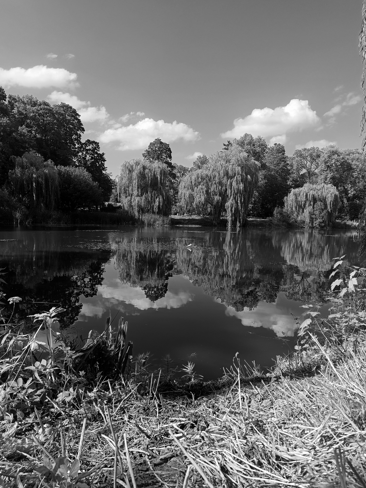
Kiedy natura jest spokojna, człowiek też jest jakiś bardziej wesoły.
~Fotograf
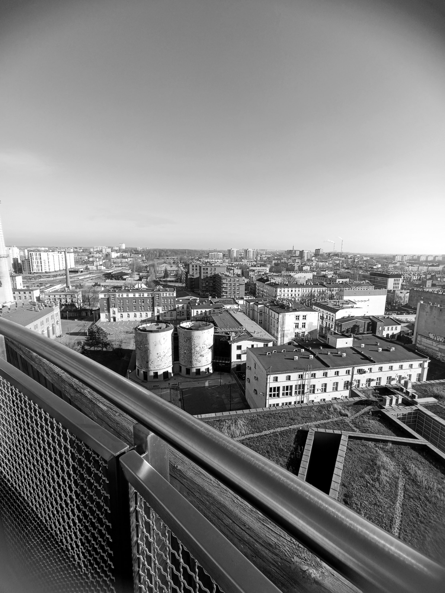
EC1 potrafi zachwycić widokiem z góry.
~Fotograf